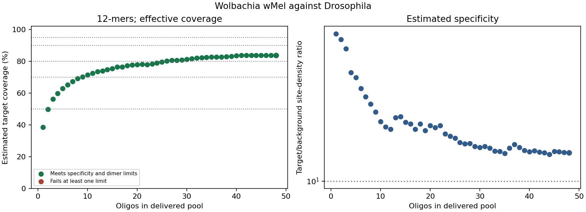

Smallest qualifying panels found among evaluated sizes; not proven global minima. Coverage and specificity are computational estimates, not lab measurements.
Coverage metric: effective; extension reach: 3,000 bp. Minimum site-density ratio: 10.0; maximum exact background sites: not set. A density ratio is not a prediction of fold enrichment.
Highest qualifying estimate among evaluated panels: 83.8% with 48 oligos.

| Requested | Delivered | Coverage | Density ratio | Host sites | Constraints |
|---|---|---|---|---|---|
| 1 | 1 | 38.5% | 75.54 | 25 | passes |
| 2 | 2 | 49.8% | 69.71 | 29 | passes |
| 3 | 3 | 56.1% | 61.49 | 45 | passes |
| 4 | 4 | 59.7% | 44.28 | 68 | passes |
| 5 | 5 | 62.9% | 41.47 | 83 | passes |
| 6 | 6 | 65.1% | 35.58 | 98 | passes |
| 7 | 7 | 67.2% | 31.87 | 102 | passes |
| 8 | 8 | 69.1% | 28.79 | 116 | passes |
| 9 | 9 | 70.3% | 25.80 | 124 | passes |
| 10 | 10 | 71.4% | 22.65 | 134 | passes |
| 11 | 11 | 72.4% | 20.99 | 141 | passes |
| 12 | 12 | 73.6% | 20.36 | 144 | passes |
| 13 | 13 | 73.9% | 23.83 | 135 | passes |
| 14 | 14 | 74.7% | 24.21 | 161 | passes |
| 15 | 15 | 75.5% | 22.37 | 165 | passes |
| 16 | 16 | 76.4% | 21.86 | 171 | passes |
| 17 | 17 | 76.4% | 20.34 | 182 | passes |
| 18 | 18 | 77.3% | 21.95 | 192 | passes |
| 19 | 19 | 77.7% | 20.02 | 206 | passes |
| 20 | 20 | 77.9% | 21.46 | 213 | passes |
| 21 | 21 | 78.2% | 20.83 | 223 | passes |
| 22 | 22 | 78.0% | 21.41 | 224 | passes |
| 23 | 23 | 78.4% | 19.11 | 243 | passes |
| 24 | 24 | 79.0% | 18.51 | 256 | passes |
| 25 | 25 | 79.6% | 18.05 | 276 | passes |
| 26 | 26 | 80.1% | 16.96 | 291 | passes |
| 27 | 27 | 80.5% | 16.70 | 303 | passes |
| 28 | 28 | 80.5% | 16.75 | 303 | passes |
| 29 | 29 | 80.9% | 16.11 | 324 | passes |
| 30 | 30 | 81.3% | 15.89 | 336 | passes |
| 31 | 31 | 81.7% | 16.06 | 329 | passes |
| 32 | 32 | 82.0% | 15.70 | 339 | passes |
| 33 | 33 | 82.3% | 15.11 | 368 | passes |
| 34 | 34 | 82.5% | 15.02 | 373 | passes |
| 35 | 35 | 82.6% | 14.62 | 387 | passes |
| 36 | 36 | 82.7% | 15.69 | 400 | passes |
| 37 | 37 | 82.7% | 16.51 | 411 | passes |
| 38 | 38 | 82.9% | 15.84 | 439 | passes |
| 39 | 39 | 83.1% | 15.23 | 471 | passes |
| 40 | 40 | 83.4% | 14.93 | 508 | passes |
| 41 | 41 | 83.7% | 15.14 | 527 | passes |
| 42 | 42 | 83.8% | 14.86 | 545 | passes |
| 43 | 43 | 83.8% | 14.73 | 557 | passes |
| 44 | 44 | 83.8% | 14.41 | 571 | passes |
| 45 | 45 | 83.8% | 15.00 | 584 | passes |
| 46 | 46 | 83.8% | 14.98 | 587 | passes |
| 47 | 47 | 83.8% | 14.80 | 610 | passes |
| 48 | 48 | 83.8% | 14.72 | 618 | passes |
| 49 | 48 | 83.8% | 14.72 | 618 | passes |
| 50 | 48 | 83.8% | 14.72 | 618 | passes |
| 51 | 48 | 83.8% | 14.72 | 618 | passes |
| 52 | 48 | 83.8% | 14.72 | 618 | passes |
| 53 | 48 | 83.8% | 14.72 | 618 | passes |
| 54 | 48 | 83.8% | 14.72 | 618 | passes |
| 55 | 48 | 83.8% | 14.72 | 618 | passes |
| 56 | 48 | 83.8% | 14.72 | 618 | passes |
| 57 | 48 | 83.8% | 14.72 | 618 | passes |
| 58 | 48 | 83.8% | 14.72 | 618 | passes |
| 59 | 48 | 83.8% | 14.72 | 618 | passes |
| 60 | 48 | 83.8% | 14.72 | 618 | passes |
| 61 | 48 | 83.8% | 14.72 | 618 | passes |
| 62 | 48 | 83.8% | 14.72 | 618 | passes |
| 63 | 48 | 83.8% | 14.72 | 618 | passes |
| 64 | 48 | 83.8% | 14.72 | 618 | passes |